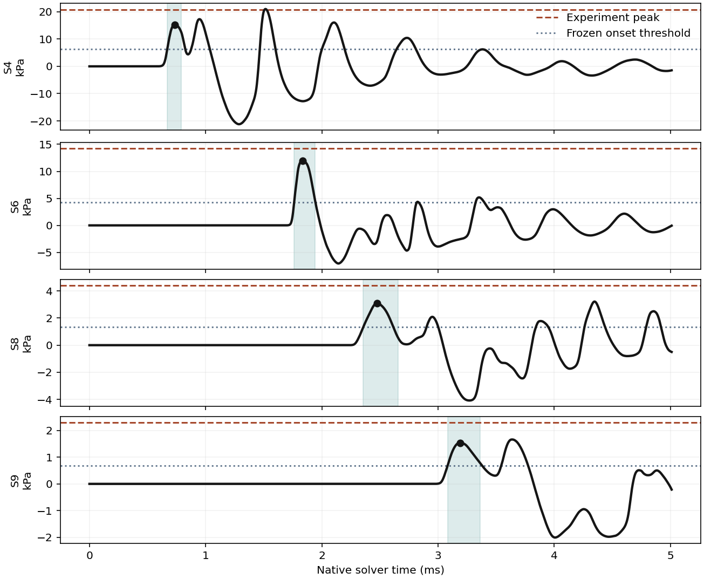

C 集群作业 8991717，cnode1838。已核对实际探针坐标、MPI 采样面和原生时钟。 原生求解正常结束，固定测点完整交付 0–5 ms，逐步压力和温度检查通过。 下表只计算事前固定规则已识别的首峰。
| 固定测点 | 实测 kPa | 论文 kPa | 全窗最大 kPa | 固定首峰 kPa | 实测 APE | 论文 APE | 波形判定 |
|---|---|---|---|---|---|---|---|
| S4 | 20.83 | 18.33 | 21.02 | 15.24 | 26.85% | 16.88% | 固定首峰已识别 |
| S6 | 14.26 | 13.70 | 11.91 | 11.91 | 16.44% | 13.06% | 固定首峰已识别 |
| S8 | 4.42 | 3.13 | 3.22 | 3.10 | 29.86% | 0.99% | 固定首峰已识别 |
| S9 | 2.30 | 1.66 | 1.66 | 1.54 | 33.30% | 7.34% | 固定首峰已识别 |
全固定分母首峰 MAPE。实测 26.62%，论文 9.57%。 分母中有未识别点时，整组 MAPE 留空。全窗最大值用于幅值诊断。APE 只按事前固定首峰计算，人工入选待审核。 原生日志最低绝对压力 684.04 Pa，最低温度 234.61 K。 实测峰值的 ±3 像素图读灵敏度对应 APE S4 23.81%–29.67%，S6 13.05%–19.58%，S8 25.19%–33.99%，S9 24.21%–40.44%。

论文原图 · 工况和测点来源 · 逐点原生数据和误差 · 调度终态 · 加密范围和基线
| 测点 | 实测 APE | 论文 APE |
|---|---|---|
| S4 | 27.45% → 26.85% | 17.56% → 16.88% |
| S6 | 17.07% → 16.44% | 13.71% → 13.06% |
| S8 | 30.13% → 29.86% | 1.36% → 0.99% |
| S9 | 34.48% → 33.30% | 8.97% → 7.34% |